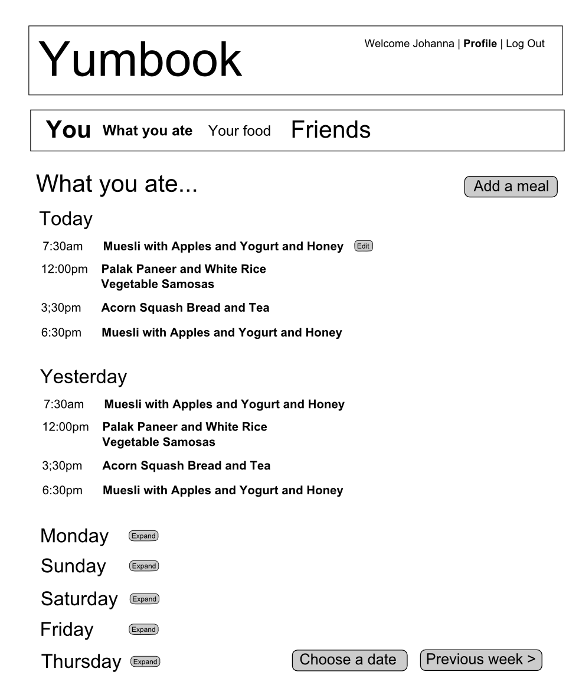

Project 4 Proposal – Johanna Bodnyk
Social Food Journal (Catchy Name TBD)
This application will allow users to track what they eat and, if they choose, share that information with their friends. Users will be able to add foods and dishes (with links to recipes, and potentially with nutrition information), and then create posts as “instances” of eating those foods, with optional photos. Users will be able to view a record of what they themselves ate, which could be used as a food journal or as inspiration for meal planning, and view a “stream” of their friends' meals. Recipes from friends' streams can be “liked” and/or added to a “want to cook” list. The project will reuse or adapt some functionality from project 2, such as creating posts and following other users. Time allowing, potential additional functionality would include comments, a nutrition analysis feature, and granular privacy controls so that specific posts, notes, or photos can be private to the user.
Sketches

Examples
- Plan to Eat is a robust recipe collection, meal planning, and shopping list generation application. The planning feature lets you click a button on the list of recipes in your “box” to add it to your planning queue, or to a specific date on the planning calendar (I'll likely do the former). (It also has a great feature that parses recipes from other websites and imports them to your collection, but I won't have time to implement that.)
- Toggl is a web-based time-tracking application. I love the user interface. Things do exactly what you expect them to in the minimum number of clicks. It autofills the right fields, tabs to the right places, and has one-click links to do things like “continue” a previously ended task. I aspire to something even half this usable and attractive.
- Though there's a lot I don't like about Pinterest, I appreciate the fact that it shows me what recipes my friends like, which can be great inspiration. If a friend likes a recipe, that's a highly trusted review, which is part of the impetus for this project.
- If I have time to implement a nutrition analysis component, I'd take a lot of inspiration from the USDA's Food Tracker website.
Copyright 2012 Johanna Bodnyk